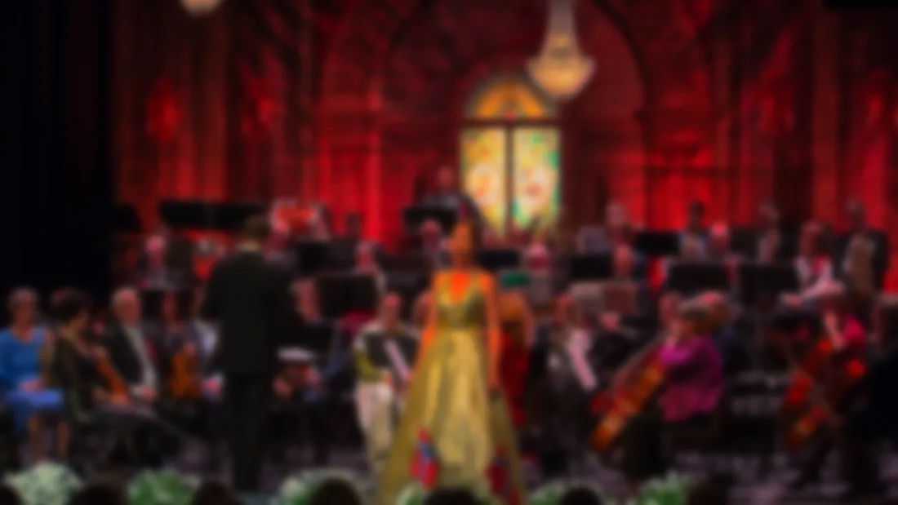
I stallen
Artister
20 artister og ensembler
-
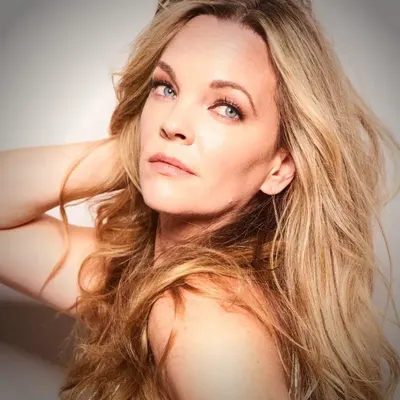
Kari Kirkland Vokal · jazz - Marius Neset & Bergen Big Band Saksofon · storband I stallen fra 2025
-
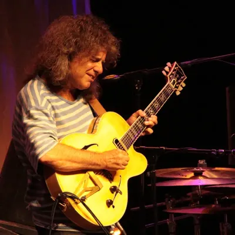
Pat Metheny Gitar · jazz -
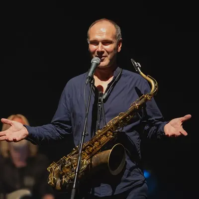
Bendik Hofseth Saksofon · komposisjon St. Olavs Orden 2026 - Karl Espegard Fiolin · tango
-
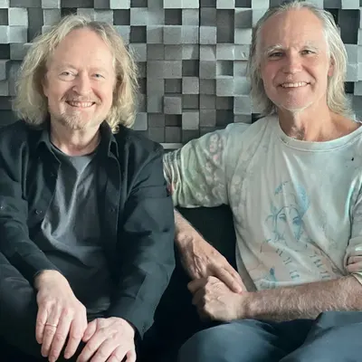
Øystein Sevåg & Lakki Patey Piano · gitar - Ivan Mazuze Saksofon · verdensjazz
-
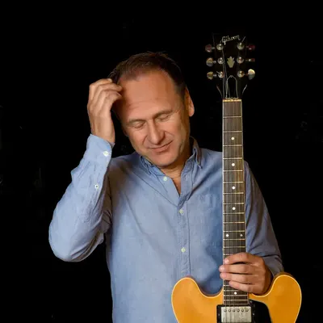
Hans Mathisen Gitar · komposisjon -
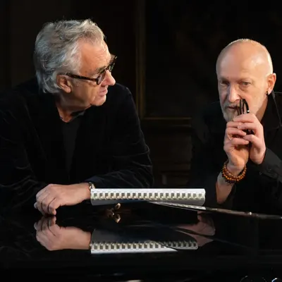
Helge Iberg & Lars Saabye Christensen Musikk & tekst - Katie Mahan Klaver · klassisk
-
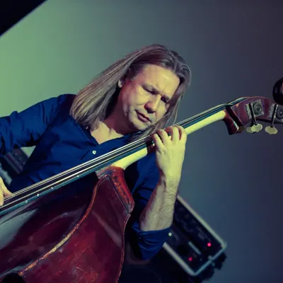
Per Mathisen Bass · «Bass Viking» -
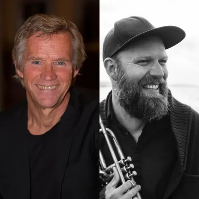
Kjetil Bjerkestrand & Mathias Eick Tangent · trompet -
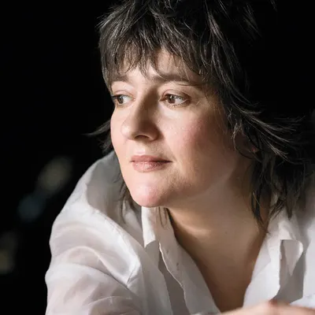
Olga Konkova Piano · jazz The Pianist Garden 2024 -
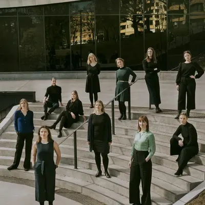
Det Norske Damekor Kor · 12 sangere -
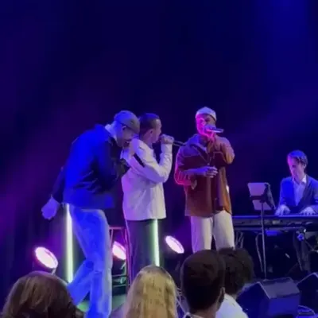
Gryting, far og to sønner Vokal · familie -
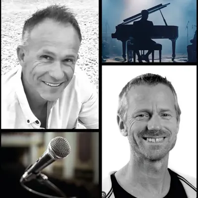
Toner av U2 Konsert · fortelling -
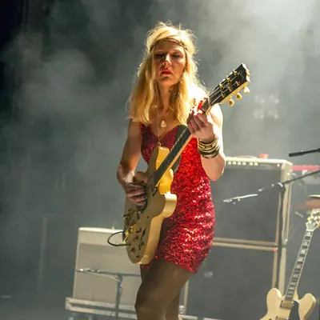
Hedvig Mollestad Gitar · rock og frijazz Artist in residence, Moldejazz 2023 -
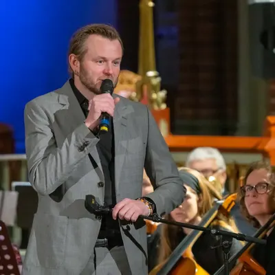
Knut Anders Sørum Vokal · soul på totendialekt -
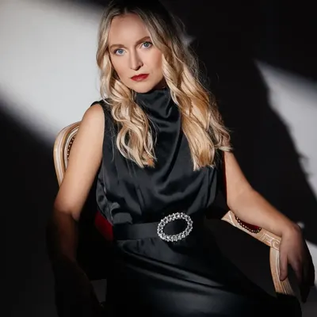
Anastasiya Bazhenova Klaver · klassisk Debutalbum 1. april 2026 - Emma Smith Vokal · britisk jazz Jazz Vocalist of the Year 2024
Fra arkivet
Bilder
-
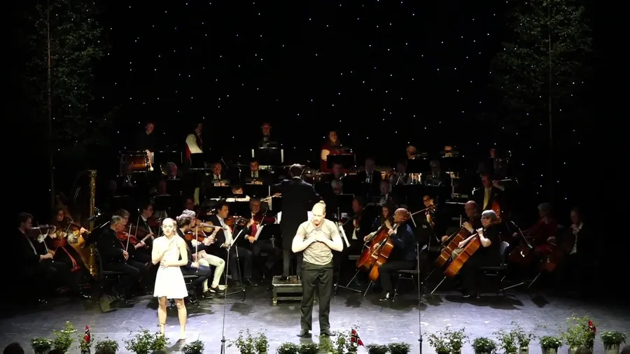
Festforestilling 17. mai · Drammen Teater -
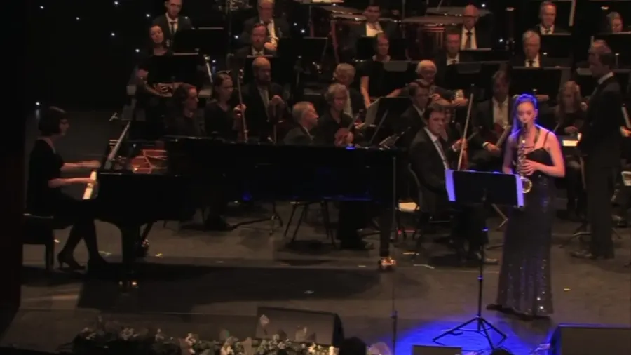
Kulturens festaften · Drammen Teater 2016 -
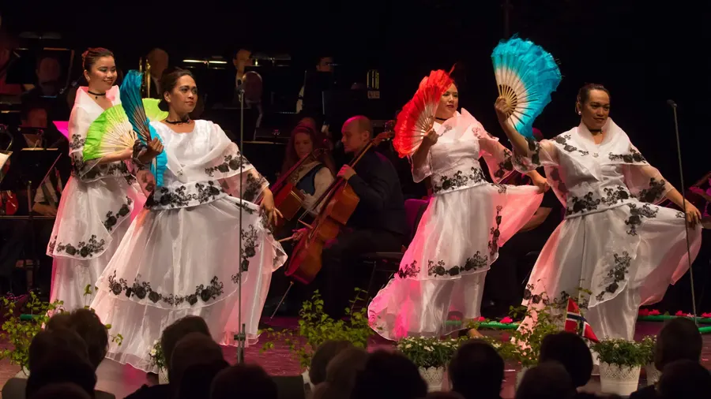
Kor og orkester -
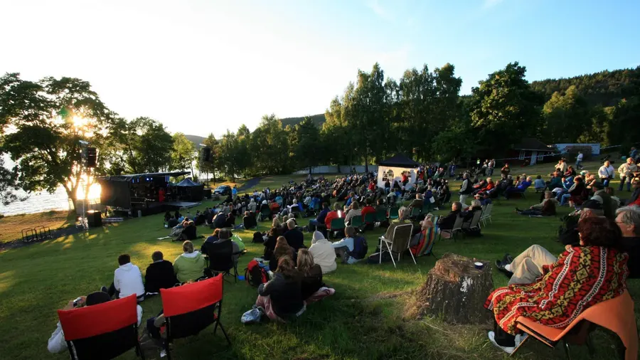
Utekonsert med publikum på gresset -
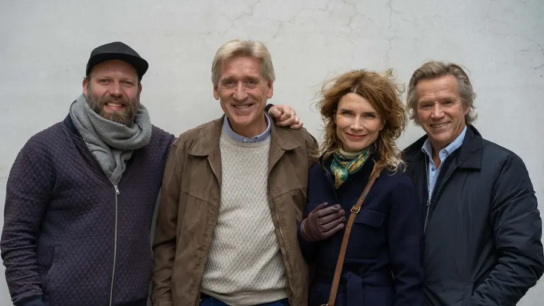
Bokmessa i Frankfurt · 2016 -
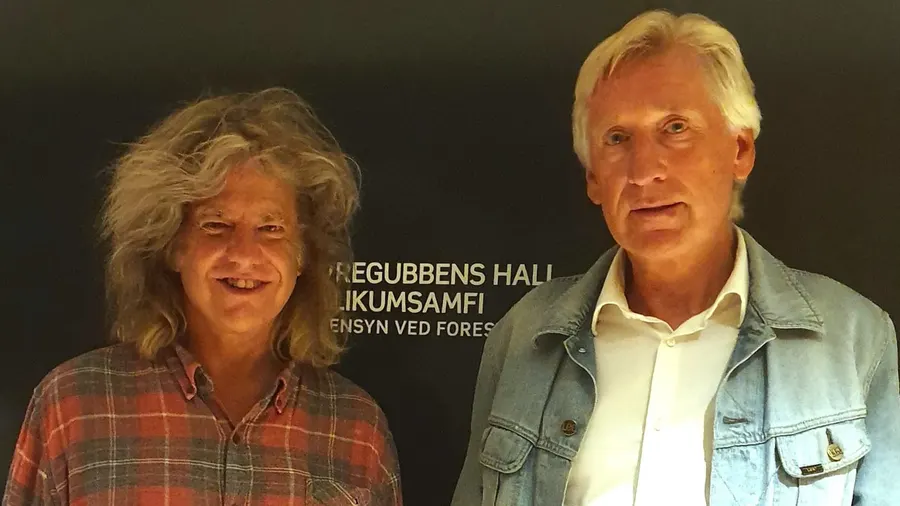
Kurland Agency i Norge · 2023–
{kind=link}
{kind=link}
{kind=link}
{kind=link}
{kind=link}
{kind=link}
Bak scenen
Utvalgte produksjoner
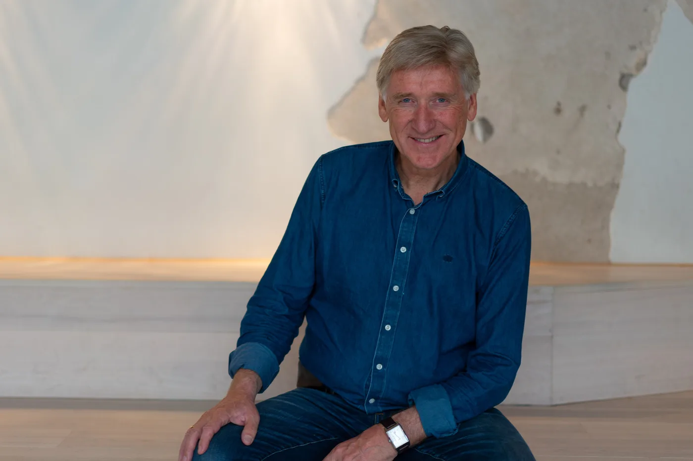
Om
Terje Brun-Pedersen
De siste årene har en intens musikkinteresse og et langsomt bygget nettverk gjort det mulig å jobbe som agent for norske og internasjonale artister.
Siden år 2000 har jeg drevet TBP Kultur med kulturproduksjon, festivalledelse, frilansjournalistikk, undervisning og sensorarbeid. I over tjue år jobbet jeg som lærer, med noen år som prosjektleder i Buskerud idrettskrets og som leder av Drammen Kulturforum.
Det er et privilegium å ha forhandlet norske turneer for Pat Metheny, og konserter for Bobby McFerrin og Gregory Porter. I stallen står musikere, kor og band fra svært ulike sjangere — og jeg legger stor vekt på åpenhet, tillit og pålitelighet når jeg forhandler.
Agent · Arrangør · Produsent · TBP Music Management
Kontakt
Fortell oss om kvelden du vil skape
Følg